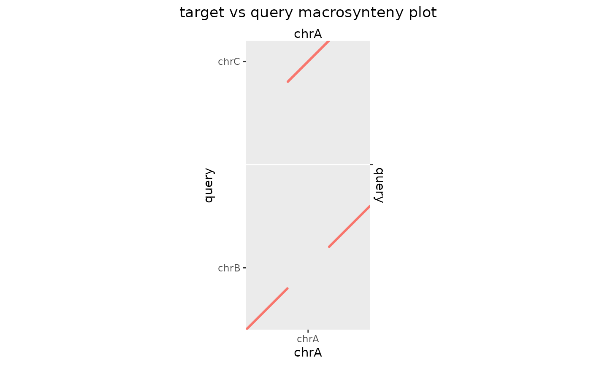
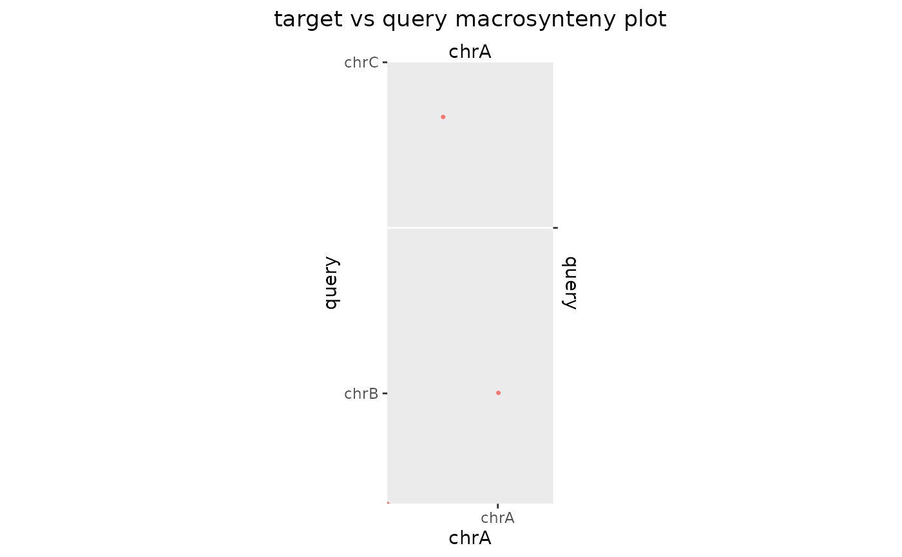

Takes a GBreaks object and prepares an Oxford (macrosynteny) of the
coordinates of the query ranges against the target ranges after
concatenating them.
makeOxfordPlots(
gb,
sp1Name = "target",
sp2Name = "query",
sp1ChrArms = NULL,
sp2ChrArms = NULL,
type = c("line", "point", "none"),
size = 1,
diag = TRUE
)A GBreaks object
Name of the first species (default: sp1)
Name of the second species (default: sp2)
A GBreaks object of chromosome arms in sp1 genome
A GBreaks object of chromosome arms in sp2 genome
The type of the plot (point, line or none)
The size of the plotted dots or segments.
Diagonalise the plot by reordering query sequence levels.
Returns a ggplot2 object that can be further modified using the
+ operator. Use type = 'none' to receive an object without geomlayer.
Other plot functions:
bp_heatmap(),
bp_pair_analysis(),
feature_coverage(),
plotApairOfChrs()
makeOxfordPlots(exampleTranslocation)

makeOxfordPlots(exampleTranslocation, type = "p")
